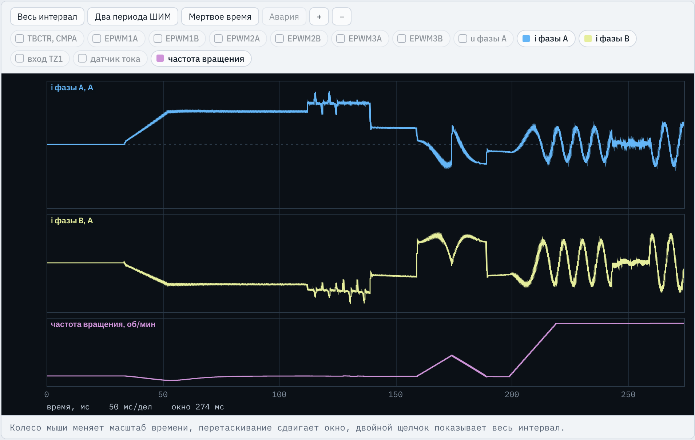
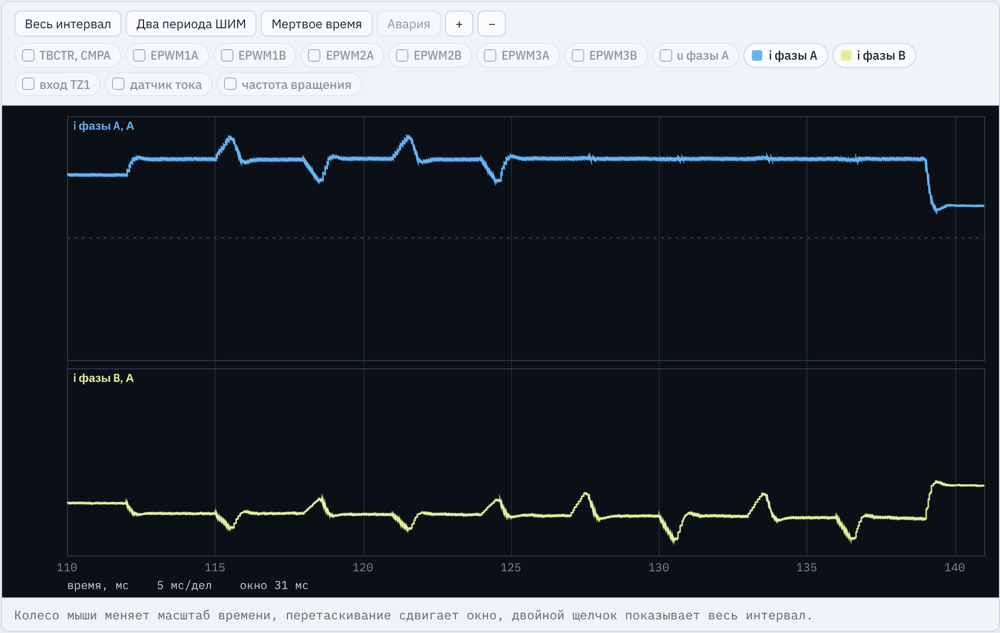
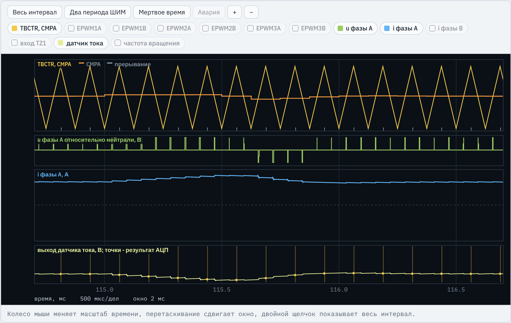
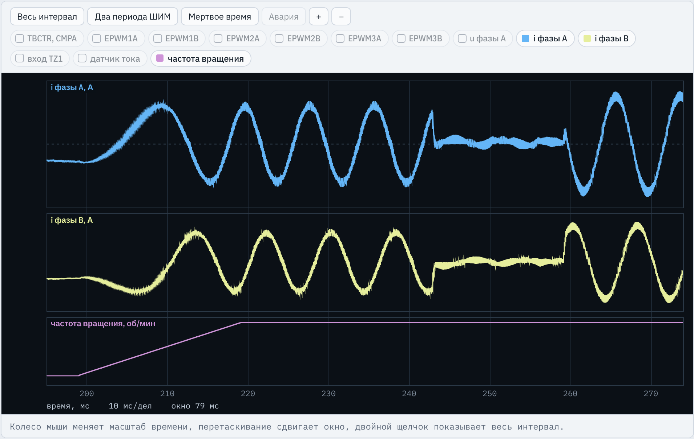

TMS320F2837xD · ЛАБОРАТОРНАЯ РАБОТА № 8
Программа сама измеряет Rs, Ld, Lq, Ψf, JΣ и пересчитывает коэффициенты регуляторов тока и скорости
Место в курсе
Инициализация ePWM, АЦП, eQEP и входа аварии, калибровка нуля датчиков, защита, преобразования Кларк и Парка, векторная ШИМ с компенсацией мертвого времени.
Новое: конечный автомат опытов, импульсы напряжения, накопление измерений, расчет параметров и коэффициентов.
Стенд C2000 · ЛР8. Идентификация СДПМ и автонастройка
2 / 24
Зачем
Коэффициенты регуляторов рассчитываются по Rs, Ld, Lq, Ψf и JΣ. Поэтому преобразователи частоты при вводе в эксплуатацию выполняют автоматическую идентификацию.
Растет с температурой примерно на 0,4 % на градус: при рабочей температуре на 20–40 % больше паспортного значения при 20 °C
Уменьшаются при насыщении магнитопровода
Технологический разброс, уменьшается при нагреве магнитов
Момент инерции механизма, как правило, неизвестен
На стенде действительные параметры модели не сообщаются: Rs больше паспортного на 10–30 %, индуктивности меньше на 5–18 %, Ψf меньше на 3–10 %. Датчик напряжения не нужен: измерительный прибор — сами регуляторы тока.
Стенд C2000 · ЛР8. Идентификация СДПМ и автонастройка
3 / 24
Алгоритм
Все выполняется в обработчике прерывания АЦП: state — номер опыта, st_cnt — число периодов ШИМ в нем.
32–112 мс
ориентация
id = 6,5 А
U1, I1
112–139 мс
8 импульсов ΔU по осям d и q
139–159 мс
id = 3,26 А
Rs, Ld, Lq, Kp, Ki
159–189 мс
iq = ±4,08 А
8 положений
189–243 мс
1500 об/мин
Ψf, JΣ, Kpω, Kiω
с 243 мс
работа с новыми коэффициентами
Перед ST_ALIGN — ST_CAL: 256 периодов (32 мс) калибровки нуля датчиков при отключенных выходах. Синим выделены состояния, в которых выполняются расчеты. Времена — вариант 1, fШИМ = 8 кГц.
ST_ALIGN, ST_LTEST, ST_R1: постоянный ток по оси d момента не создает; импульсы по оси q короткие и чередуются по знаку. Измеряются Rs, Ld, Lq
ST_JTEST — током iq двигателя, ST_PSI — нагрузочной машиной. Угол — с энкодера после ориентации. Измеряются JΣ и Ψf
Стенд C2000 · ЛР8. Идентификация СДПМ и автонастройка
4 / 24
Методы
| Параметр | Опыт | Расчет | Почему так |
|---|---|---|---|
| Rs | Постоянный ток id на двух уровнях: Iор = 6,5 А и IR1 = 0,4 Im | Rs = (U1 − U2) / (I1 − I2) | погрешность инвертора Δu почти не зависит от тока и вычитается |
| Ld, Lq | Импульсы ΔU по Nп = 4 периода при id = Im, по 4 на ось с чередованием знака | L = (ΔU − RsΔi(Nп+1)/(2Nп))·NпT / Δi | отклик тока на ступень напряжения; учтено падение на Rs |
| JΣ | Разгон током +IJ и торможение −IJ по 15 мс | JΣ = 2kMIJ / (ε1 − ε2) | момент сопротивления одинаков на обоих участках и вычитается |
| Ψf | Вал вращается нагрузочной машиной, id = 0,4 Im | Ψf = Σ(uq − Rsiq − ωeLdid) / Σωe | ЭДС вращения; ток по d уводит погрешность инвертора из uq |
| K | Сразу после Rs, L и после Ψf, JΣ | Kpd = Ld/(2Tμ), Ki = Rs/(2Tμ); Kpω = JΣ/(2kMTμω) | технический оптимум (ЛР6), симметричный оптимум (ЛР7) |
Стенд C2000 · ЛР8. Идентификация СДПМ и автонастройка
5 / 24
Задание
I_M, N_W из таблицы А.1, рассчитать токи опытов, импульсы, ЭДС и коэффициенты по паспортуОпределения опытов (T_R, N_P, N_CYC, I_J, N_PSI и др.), состояния ST_CAL…ST_FAULT, все переменные, каркас обработчика с пометками ЗАДАНИЕ.
Результат: id_done = 1, найденные r_id, ld_id, lq_id, psi_id, j_id отличаются от паспортных на 5–30 % и проходят 10 проверок из 10.
Стенд C2000 · ЛР8. Идентификация СДПМ и автонастройка
6 / 24
Задание 1
| Величина | Формула | Значение |
|---|---|---|
| T | 1 / fШИМ | 125 мкс |
| Iор; IR1 | I_AL; 0,4 Im | 6,5 А; 3,26 А |
| IL; ΔIL | Im; 0,25 Im | 8,16 А; 2,04 А |
| ΔU по осям d; q | ΔILLпасп / (NпT) | 8,98 В; 10,61 В |
| Падение на Rs в формуле L | RsΔIL(Nп+1) / (2Nп) | 0,57 В (6,4 % ΔU по d) |
| IJ; ε; ωmax | 0,5 Im; kMIJ/JΣ; εTJ | 4,08 А; 4680 рад/с²; 70 рад/с (670 об/мин) |
| ЭДС при 1500 об/мин | pωΨf | 40,8 В |
| Kpd; Kpq; Ki | L/(2T); Rs/(2T) | 8,80; 10,40 В/А; 1800 В/(А·с) |
| Kpω; Kiω | Tμω = 2T + NωT = 750 мкс | 0,581 А·с/рад; 194 А/рад |
Паспорт: Rs = 0,45 Ом, Ld = 2,2 мГн, Lq = 2,6 мГн, Ψf = 0,052 Вб, p = 5, kM = 1,5pΨf = 0,39 Н·м/А; JΣ = 3,4·10−4 кг·м² из ЛР7.
Стенд C2000 · ЛР8. Идентификация СДПМ и автонастройка
7 / 24
Задание 2
lr8_reference.c, adca1_isr(), листинг 1
if (state == ST_ALIGN)
{
th = 0.0f; thu = 0.0f;
idr = I_AL * fminf(1.0f, (float)st_cnt / (0.25f * N_AL));
}Ориентация ЛР6: угол 0, ток по оси фазы A нарастает до Iор = 6,5 А за Nор/4 = 160 периодов (20 мс), ротор поворачивается плавно
else if (state == ST_R1)
idr = I_R1;
else if (state == ST_PSI)
idr = I_PSI;Второй уровень тока для Rs: 3,26 А. При измерении ЭДС тот же ток по оси d: погрешность инвертора уходит в ud
else if (state == ST_JTEST)
iqr = (st_cnt < N_J) ? I_J : -I_J;120 периодов (15 мс) разгон током +4,08 А, затем 15 мс торможение током −4,08 А
else if (state == ST_RUN)
{
idr = id_ref; iqr = iq_ref;
}После идентификации задания приходят извне: испытание задает скачок iq_ref
Стенд C2000 · ЛР8. Идентификация СДПМ и автонастройка
8 / 24
Задание 2
lr8_reference.c, adca1_isr(), листинг 1
else if (state == ST_LTEST)
{
idr = I_L;
if (st_cnt >= N_CYC) // первый цикл - установление тока I_L
{Весь опыт id = Im = 8,16 А. Первый цикл (24 периода, 3 мс) — установление тока, импульсов нет
cyc = st_cnt / N_CYC - 1; ph = st_cnt % N_CYC;
cyc = 0…7 — номер импульса, ph = 0…23 — период в цикле
ax = (cyc < N_PUL) ? 1 : 2;
sg = (cyc % 2 == 0) ? 1.0f : -1.0f;Импульсы 0–3 по оси d, 4–7 по оси q; знак +, −, +, −
if (ph < N_P) du = sg * DI_L * (ax == 1 ? L_D : L_Q) / (N_P * TS);
ph = 0…3: ΔU = ΔILLпасп/(NпT): 8,98 В по d, 10,61 В по q
else if (ph > N_P) ax = 0; // восстановление: регуляторы работают
}
}ph = 4: ax остается, du = 0, напряжение up0; ph ≥ 5 — обычная работа
Стенд C2000 · ЛР8. Идентификация СДПМ и автонастройка
9 / 24
Задание 3
lr8_reference.c, adca1_isr()
ed = idr - i_d; eq = iqr - i_q; ud = kp_d * ed + x_d - w_e * lq_id * i_q; uq = kp_q * eq + x_q + w_e * (ld_id * i_d + psi_id);
Регуляторы ЛР6, но вместо констант переменные: до идентификации в них паспортные значения, после — найденные
if (ax == 1) ud = u_p0 + du; // импульс по оси d (ph = N_P - возврат к u_p0)
if (ax == 2) uq = u_p0 + du;Выход регулятора оси заменяется: напряжение точно up0 + ΔU и не зависит от тока. Другая ось регулируется
// ... ограничение вектора при um > U_LIM, как в ЛР6
else
{
if (ax != 1) x_d += ki_i * TS * ed;
if (ax != 2) x_q += ki_i * TS * eq;
}Интегральная составляющая оси импульса не изменяется: после импульса регулятор продолжает с прежнего состояния
u_d = ud; u_q = uq;
Напряжения периода запоминаются: в следующем вызове это up0
Стенд C2000 · ЛР8. Идентификация СДПМ и автонастройка
10 / 24
Задание 3
Выборка и расчет — при TBCTR = TBPRD. Новое CMPA действует с ближайшего нуля счетчика, через T/2.
ph = 0…Nп−1: u = up0 + ΔU, ток нарастает Nп периодов.
ph = Nп: u = up0, последние полпериода до выборки ph = Nп+1 ток постоянен.
∫(i − I0)dt = Δi·T·Nп/2 + Δi·T/2 = Δi·T(Nп+1)/2, отсюда множитель (Nп+1)/(2Nп) в формуле L.
Стенд C2000 · ЛР8. Идентификация СДПМ и автонастройка
11 / 24
Задание 4
lr8_reference.c, adca1_isr(), листинг 2, ST_ALIGN и конец ST_LTEST
if (st_cnt >= N_AL - N_R) { acc_u += ud; acc_i += i_d; }Последние NR = 160 периодов: ток установился, копятся U1, I1
if (++st_cnt >= N_AL)
{
u2 = acc_u / N_R; i2 = acc_i / N_R;Средние за 20 мс; в программе u2, i2, в формуле (2) — U1, I1
EQep1Regs.QEPCTL.bit.SWI = 1; // QPOSCNT = 0: ось d совпадает с осью фазы A
pos_prev = 0; pos_cnt = 0; w_e = 0.0f;Начальная ориентация ЛР6; pos_cnt — многооборотное положение для опыта разгона
dl_d = 0.0f; dl_q = 0.0f;
state = ST_LTEST; st_cnt = 0;
}Обнуление сумм приращений тока, переход к импульсам
if (++st_cnt >= (2 * N_PUL + 1) * N_CYC)
{
state = ST_R1; st_cnt = 0; acc_u = 0.0f; acc_i = 0.0f;
}Конец ST_LTEST: 9 циклов по 24 периода (27 мс); накопители освобождаются
Стенд C2000 · ЛР8. Идентификация СДПМ и автонастройка
12 / 24
Задание 4
lr8_reference.c, adca1_isr(), листинг 2, ST_LTEST
if (st_cnt >= N_CYC)
{
cyc = st_cnt / N_CYC - 1; ph = st_cnt % N_CYC;Те же номер импульса и период, что в листинге 1
if (ph == 0) // начало импульса { i_p0 = (cyc < N_PUL) ? i_d : i_q; u_p0 = (cyc < N_PUL) ? u_d : u_q; // напряжение предыдущего периода
Ток до импульса — начало отсчета Δi. u_d, u_q еще не перезаписаны: это установившееся напряжение
if (cyc < N_PUL) ud = u_p0 + du; else uq = u_p0 + du;
}Импульс подается в этом же периоде, уже с новым up0
if (ph == N_P + 1) // ток после N_P периодов действия добавки
{
sg = (cyc % 2 == 0) ? 1.0f : -1.0f;
if (cyc < N_PUL) dl_d += sg * (i_d - i_p0); else dl_q += sg * (i_q - i_p0);
}
}Выборка ph = 5; приращение со знаком импульса суммируется: по 4 значения на ось
Стенд C2000 · ЛР8. Идентификация СДПМ и автонастройка
13 / 24
Задание 4
lr8_reference.c, adca1_isr(), листинг 2, ST_R1 (отступы сокращены)
if (st_cnt >= N_R / 2) { acc_u += ud; acc_i += i_d; }Первые 10 мс после смены тока пропускаются: идет переходный процесс
if (++st_cnt >= N_R)
{
r_id = (u2 - acc_u / (N_R - N_R / 2)) / (i2 - acc_i / (N_R - N_R / 2));Формула (2): Rs = (U1 − U2)/(I1 − I2)
dl_d /= N_PUL; dl_q /= N_PUL; ld_id = (DI_L * L_D / (N_P * TS) - r_id * dl_d * (N_P + 1) / (2.0f * N_P)) * N_P * TS / dl_d; lq_id = (DI_L * L_Q / (N_P * TS) - r_id * dl_q * (N_P + 1) / (2.0f * N_P)) * N_P * TS / dl_q;
Формула (4): ΔU — та же добавка, что подавалась, минус падение на найденном Rs
kp_d = ld_id / (2.0f * T_MU); kp_q = lq_id / (2.0f * T_MU); ki_i = r_id / (2.0f * T_MU); state = ST_JTEST; st_cnt = 0; }
Перенастройка (8), Tμ = T: дальнейшие опыты идут с новыми коэффициентами
Стенд C2000 · ЛР8. Идентификация СДПМ и автонастройка
14 / 24
Задание 4
lr8_reference.c, adca1_isr(), листинг 2, ST_JTEST и ST_PSI
if (st_cnt == N_J1) pj[0] = pos_cnt;
if (st_cnt == 3 * N_J1) pj[1] = pos_cnt;
if (st_cnt == N_J - 3 * N_J1) pj[2] = pos_cnt;
if (st_cnt == N_J - N_J1) pj[3] = pos_cnt;
// ... pj[4]..pj[7] - то же для участка торможенияПоложения в 1 и 3 мс от начала и за 3 и 1 мс до конца участка: скорость по центральным разностям базой 2 мс
if (++st_cnt >= 2 * N_J)
{
state = ST_PSI; st_cnt = 0; acc_u = 0.0f; acc_w = 0.0f;
}JΣ пока не считается: нужен kM, то есть Ψf
if (fabsf(w_e) < W_PSI * POLE_P) st_cnt = 0; // ждать вращения
else if (++st_cnt > N_PSI / 2)
{
acc_u += uq - r_id * i_q - w_e * ld_id * i_d;
acc_w += w_e;Порог ωe = 100p = 500 рад/с, пропуск 80 периодов. Числитель (7): uq без Rsiq и ωeLdid
Стенд C2000 · ЛР8. Идентификация СДПМ и автонастройка
15 / 24
Задание 4
lr8_reference.c, adca1_isr(), конец ST_PSI (отступы сокращены)
if (st_cnt >= N_PSI / 2 + N_PSI)
{
psi_id = acc_u / acc_w;
km = 1.5f * POLE_P * psi_id;Через 160 периодов суммирования: отношение сумм, kM = 1,5pΨf
a1 = ((float)(pj[3] - pj[2]) - (float)(pj[1] - pj[0])) * K_CNT_M / (2.0e-3f * (T_J - 4.0e-3f)); a2 = ((float)(pj[7] - pj[6]) - (float)(pj[5] - pj[4])) * K_CNT_M / (2.0e-3f * (T_J - 4.0e-3f));
Формула (5): разность скоростей за 11 мс
j_id = 2.0f * km * I_J / (a1 - a2);
Формула (6): момент сопротивления вычитается
tmw = 2.0f * T_MU + N_W * TS; kp_w = j_id / (2.0f * km * tmw); ki_w = kp_w / (4.0f * tmw); id_done = 1; state = ST_RUN; st_cnt = 0;
Симметричный оптимум ЛР7: Tμω = 750 мкс. id_done = 1 проверяет И9
Стенд C2000 · ЛР8. Идентификация СДПМ и автонастройка
16 / 24
Осциллограммы

i фазы A — ток фазы A, А; пока угол равен 0, это id
i фазы B — ток фазы B, А; при угле 0 iq = (ia + 2ib)/√3
частота вращения — вала, об/мин
0–32 мс — калибровка, тока нет.
32–112 — ориентация: ia до 6,5 А, ib = −ia/2.
112–139 — импульсы.
139–159 — ток 3,26 А.
159–189 — разгон и торможение.
199–219 — вал разгоняется до 1500 об/мин.
243 — id_done = 1, токи около 0.
259 — скачок iq_ref.
Стенд C2000 · ЛР8. Идентификация СДПМ и автонастройка
17 / 24
Осциллограммы

i фазы A — равен id: импульсы по оси d
i фазы B — при импульсах по оси q меняется только он, ia постоянен
112 мс — ток 6,5 → 8,16 А, первый цикл 3 мс без импульсов.
115, 118, 121, 124 мс — импульсы по d со знаками +, −, +, −.
127–136 мс — четыре импульса по q.
Каждый импульс 0,5 мс, затем регулятор возвращает ток.
139 мс — ST_R1, ток 3,26 А.
Стенд C2000 · ЛР8. Идентификация СДПМ и автонастройка
18 / 24
Осциллограммы

TBCTR, CMPA — счетчик ePWM1 и уставка фазы A; отметки — прерывания
u фазы A — относительно нейтрали, В
i фазы A — равен id, А
датчик тока — выход датчика фазы A, В; точки — выборки АЦП при TBCTR = TBPRD
С нуля счетчика около 115,0 мс CMPA больше на 4 периода — ток растет ступенями. Около 115,5 мс один период up0: ток стоит до выборки ph = 5. Затем CMPA ниже исходного — регулятор возвращает ток.
Стенд C2000 · ЛР8. Идентификация СДПМ и автонастройка
19 / 24
Осциллограммы

i фазы A — ток фазы A, А
i фазы B — ток фазы B, А
частота вращения — вала, об/мин
199–219 мс — нагрузочная машина разгоняет вал до 1500 об/мин; токи синусоидальные, id = 3,26 А.
Около 212 мс порог 955 об/мин, затем пропуск 10 мс и суммирование 20 мс.
243 мс — id_done = 1, задания нулевые, токи около 0.
259 мс — скачок iq_ref = 4,1 А: проверка И8.
Стенд C2000 · ЛР8. Идентификация СДПМ и автонастройка
20 / 24
Результат
| Величина | Паспорт | Найдено (эталон) | Отличие от действительного |
|---|---|---|---|
| Rs, Ом | 0,45 | 0,558 | +0,04 % |
| Ld; Lq, мГн | 2,20; 2,60 | 1,914; 2,276 | +0,01 %; −2,72 % |
| Ψf, Вб | 0,0520 | 0,04712 | +0,69 % |
| JΣ, кг·см² | 3,40 (ЛР7) | 3,458 | +1,71 % |
| Kpd; Kpq, В/А | 8,80; 10,40 | 7,66; 9,11 | +0,01 %; −2,72 % |
| Ki, В/(А·с) | 1800 | 2233 | +0,04 % |
| Kpω, А·с/рад; Kiω, А/рад | 0,581; 194 | 0,6523; 217,4 | +1,01 %; +1,01 % |
Сопротивление на 24 % больше паспортного, индуктивности на 12–13 % меньше: Ki вырос на 24 %, Kp уменьшились. И8: перерегулирование 0,0 %, нарастание 500 мкс при пределе 625 мкс.
Стенд C2000 · ЛР8. Идентификация СДПМ и автонастройка
21 / 24
Приемка
| № | Что проверяется | Зачем |
|---|---|---|
| И1 | 8 кГц ± 0,1 %, мертвое время 1,1–1,3 мкс, нет сквозного тока; ошибка угла θe ≤ 1,5° средняя, ≤ 4° наибольшая | основа ЛР6: ориентация оси d |
| И2 | r_id отличается от действительного не более чем на 3 % | от Rs зависят Ki и расчет L |
| И3 | ld_id, lq_id — не более 6 % | Kp регуляторов тока |
| И4 | psi_id — не более 3 % | компенсация ЭДС, kM |
| И5 | j_id — не более 5 % | настройка контура скорости |
| И6 | kp_d, kp_q, ki_i — не более 7 % от технического оптимума по действительным параметрам | регуляторы действительно перенастроены |
| И7 | kp_w, ki_w — не более 8 % от симметричного оптимума | верные Tμω и kM |
| И8 | Скачок iq 0 → 4,1 А при 1500 об/мин: перерегулирование ≤ 10 %, нарастание не дольше предела, отклонение id ≤ 0,12 Im, ошибка ≤ 0,03 Im | качество контура тока после настройки |
| И9 | Выходы отключены при калибровке, включены не позднее 1 мс после нее; ложных отключений нет; id_done = 1 до 259 мс | опыты не вызывают срабатывания защиты |
| И10 | EALLOW/EDIS, сброс ADCINT1, PIEACK, переменные объявлены, ошибок выполнения нет | правила программирования |
Стенд C2000 · ЛР8. Идентификация СДПМ и автонастройка
22 / 24
Типовые ошибки
| Ошибка | Что получается | Проверки |
|---|---|---|
| Заготовка без изменений | проходит только И10 | И1–И9 |
| Напряжение в ST_R1 копится в первой половине NR, без паузы | r_id +56,5 %, ki_i +56,5 % | И2, И3, И6 |
| L без учета падения напряжения на Rs | ld_id +9,1 %, lq_id +4,7 % | И3, И6 |
| Ток в конце импульса взят при ph = Nп | ld_id +11,7 %, lq_id +7,6 % | И3, И6 |
| Ψf по механической скорости | psi_id, j_id в 5 раз больше; отключение защиты при 243 мс | И4, И5, И8, И9 |
| kM без множителя 1,5 | j_id −32 % | И5 |
| Регуляторы тока не перенастроены | kp_d +14,9 %, kp_q +11,1 %, ki_i −19,4 % | И6 |
| Tμω без периода контура скорости | kp_w в 3 раза, ki_w в 9 раз больше | И7 |
Стенд C2000 · ЛР8. Идентификация СДПМ и автонастройка
23 / 24
Порядок
I_M, N_W из таблицы А.1, расчеты по паспортуstate, i_d, i_q и сравнить с рисунком 2i_d, i_q в ST_LTEST как на рисунке 3id_done = 1, параметры отличаются от паспортных на 5–30 %Стенд C2000 · ЛР8. Идентификация СДПМ и автонастройка
24 / 24